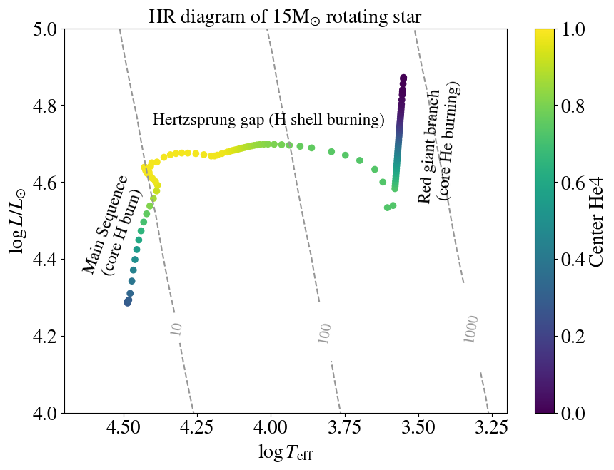

Starting from our ZAMS model, we will now make the star rotate.
We will continue to work on inlist_rotating_star.
The question that we are hoping to address is: what does the rotation do to the star?
Task R.1
Make the star rotating with a rotation of $20\%$ of the critical rotation.
To do this set the following in the &star_job section of your inlist_rotating_star:
&star_job
(...)
! Change the initial rotation of the star
change_rotation_flag = .true. !enabling rotation
new_rotation_flag = .true.
! specify the initial rotation as a fraction of the critical rotation
set_initial_omega_div_omega_crit = .true.
new_omega_div_omega_crit = 0.2
Remove the 'max model' requirement (max_model_number = 100), and instead stop the model when we run
out of He in the core (in other words, when we have reached the end of core He burning).
To do this, set the following in the &controls section of your inlist_rotating_star:
Run the model until you see termination code: xa_central_lower_limit.
Solution R.1:
At this point, your inlist_rotating_star should look like this
While this model is running (this should take about 5 minutes), let's think about the physical meaning of the changes we have just made.
Remember that the rotatioinal velocity $\Omega = v/r$.
Task R.2
What is MESA doing when we set a value for set_omega_div_omega_crit? (hint: check \$MESA_DIR/star/defaults/star_job.defaults)
What is the definition of $\Omega_{crit}$ ?
(hint: look for critical rotation in Heger et al. (2000)
Solution R.2:
In \$MESA_DIR/star/defaults/star_job.defaults, we see that set_initial_omega_div_omega_crit = .true.
sets a uniform omega/omega crit = new_omega_div_omega_crit.
Because this is _initial, it only applies at start of run, not for restarts.
$\Omega_{crit}$ (the 'critical rotation rate' in rad/s), is the rotational velocity where the centrifugal force equals the gravitational force.
In other words, this is the limit where the star would start to break apart due to the centrifugal force.
$
v_{\text{crit}}^2 = \frac{Gm}{r} \cdot \left(1 - \Gamma \right)
$
where $\Gamma$ is the ratio of the luminosity to the Eddington luminosity.
$
\begin{equation}
\Gamma = L /L_{\text{Edd}}
\end{equation}
$
remember that $\Omega = v/r$ so that we get the expression linked in the MESA source code:
$
\omega_{\text{crit}} = \sqrt{(1 - \Gamma) \times G m /r^3 }
$
What happens to a rotating star as it evolves?
The Hertzsprung-Russell (HR) diagram of the rotating ZAMS model will look something like this:

The dashed grey lines indicate lines of constant radius (we can draw lines of constant radii for every $T_{\mathrm{eff}}$ and $L$ because of the
Stefan Boltzmann law).
We colored the points the HR evolution by the central helium fraction, to indicate the evolutionary state of the star.
That is, as the star burns H in the core the central helium fraction increases to 1.
Next the star burns H in a shell and the star moves to the right in the HR diagram, across the 'Hertzsprung gap'.
When the star starts burning He in the core, the central helium fraction decreases, and the star moves up the red giant branch.
It is now interesting to look at the output of your model.
Open a new Jupyter notebook and load the history data of your model.
If you need a refresher on how to look at the output of your MESA model, have a look at the MESA output page on Part 1 of this hackathon.
Task R.3
Plot the surface rotation velocity as a function of the age of the star.
Color the points by the center_he4 fraction to keep track of the evolutionary state of the star (similar to the HR diagram above).
Do the same for the $\Omega/\Omega_{crit}$.
At what moments does the star spin up or spin down?
(hint: compare the evolutionary stage in your figure to the evolution in the HR diagram)
What is the surface velocity at
I) the start of core H burning (Zero Age Main Sequence)
II) the end of core H burning, and
III) the end of core He burning?
The star spins down as it expands (i.e., as the radius increases during the main sequence, and especially during the Hertzsprung gap),
while it spins up when it contracts (end of main sequence)
The surface velocity starts at about 130km/s, spins down to about 65 km/s at the end of core H burning,
and ends with essentially 0km/s at the end of core He burning.
Since we are interested in the rotation of the core, the internal rotation profile of the star is of more interest than just the surface rotation.
To do this, you want to read in the profile data of your star. Have a look at the profiles.index file to see which profiles are available.
Again, see the MESA output page for more information on how to read in the profile data.
Task R.4
Can you imagine why/when the core will spin up or spin down?
Plot omega as a function of the mass coordinate of the star at the following evolutionary stages:
I) Zero Age Main Sequence (ZAMS)
II) the end of core H burning, or Terminal Age Main Sequence (TAMS)
III) core He-exhaustion
We'll define TAMS as the moment when the central hydrogen fraction drops below $10^{-7}$.
Hint: to find which profile you need, we suggest you have a look at the profiles.index file,
which lists all the profiles and their corresponding module_number.
Check the central H fration for each of these module_numbers using the history.data to define TAMS.
Solution R.4:
The notebook with the solution can be found here.
We expect the core to spin up (slow down) when it contracts (expands), similar to the envelope!
The first model corresponds to ZAMS, and the last model corresponds to the end of core He burning.
the center_H1 fraction drops below $10^{-7}$ at model ~157.0, making it a reasonable proxy for the TAMS.
The star starts as a solid body rotator: the angular velocity is constant throughout the star.
As the star evolves, the core contracts and so we see a spin up of the inner parts of the core.
At core He exhaustion, we clearly see a rotating core and a rotating shell a bit higher up, while the envelope is not rotating.